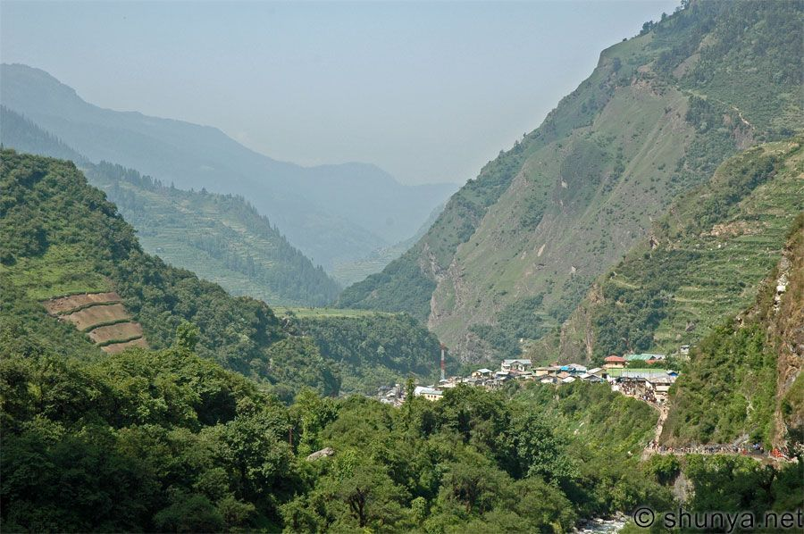
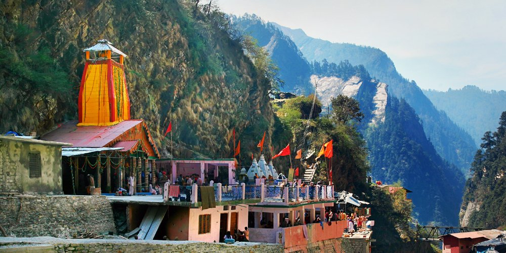
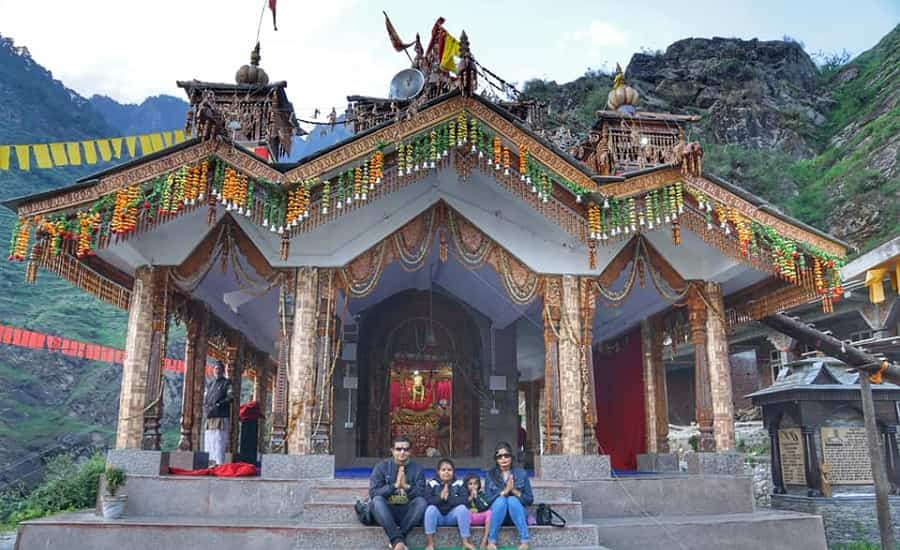
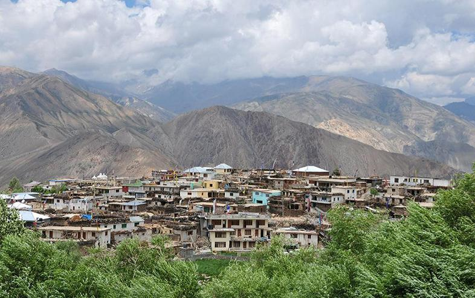
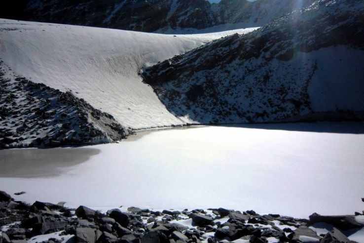

Your
Uttarakhand
Home
Yamunotri
Destinations
Top Recommended
Places to Visit in
Yamunotri

Trek Start Point
Janki Chatti
4 km from City Center
Starting point of the 6 km trek to Yamunotri. Ponies and palanquins available here.

Sacred Temple
Yamunotri Temple
0 km from City Center
Built in 19th Century, contains a silver idol of Yamuna. One of the Char Dhams.

Trekking Point
Hanuman Chatti
9 km from City Center
Popular trekking base and overnight stay option. Connects to Darwa Top and Dodi Tal.

Hill Station
Barkot
18 km from City Center
Charming hill station known for trekking trails, white water rafting and stunning views.

Lake
Saptarishi Kund
5 km from City Center
High altitude lake, believed to be the original source of Yamuna. Difficult trekking spot.